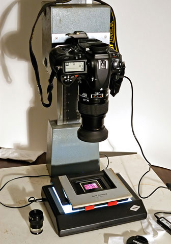
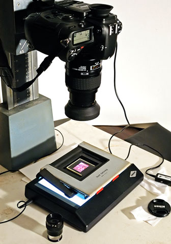
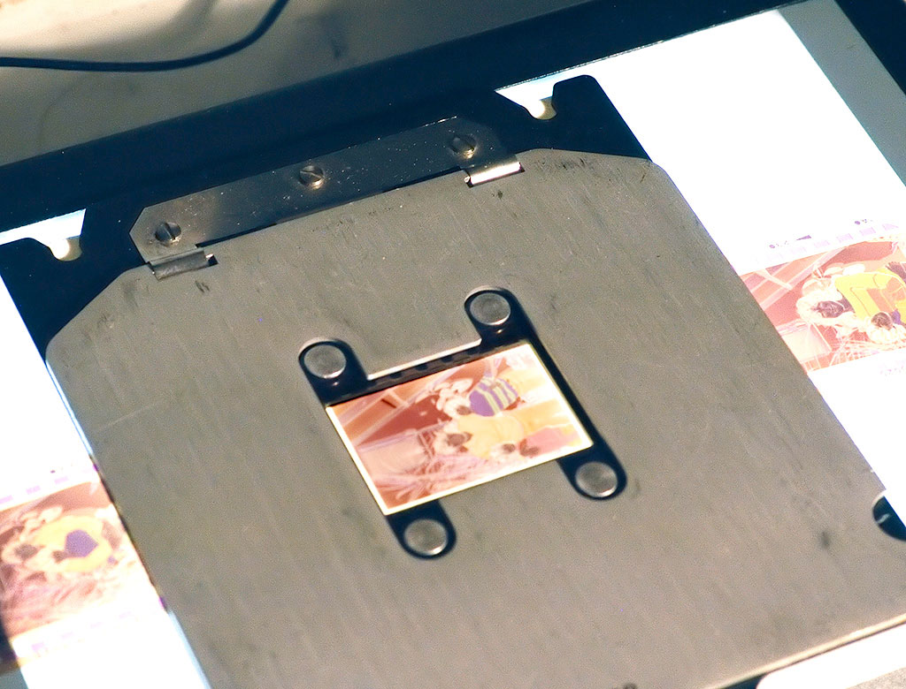
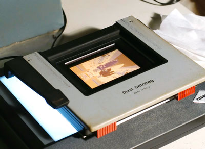

|
photographs by bernard
Camera as a Scanner |
|||||||||||||
| How to Pages | |||||||||||||
| Your DSLR or other digital camera may be used as a substitute for a film scanner if you only have a few transparencies or negatives to digitize. The photos to the right show a Nikon D2x mounted to an old Durst enlarger column. (A copy stand or in a pinch a tripod would also work.) A macro lens, such as the 105 F2.8 shown here works best, but any lens with an extension tube or close-up lens attached will also work.
I've used a small light box designed for viewing slides with a 5000 Kelvin light source that has a high color rendering index. Sitting on top of the light box is the negative carrier from the Durst enlarger. The photos on the right shows a slide in a glass mount in the carrier. The photos below show a 35mm negative and a 120 negative in the appropriate negative carrier. To get the best results, the sensor plane of the camera must be parallel to the plane of the negative or transparency. Some copy stands will have adjustments to align the camera properly. With the Durst enlarger stand, I have used cardboard shims as can be seen in the photo on the far right. The slide or negative must be held as flat as possible. For example, the slide shown is in a glass mount. Make sure that the light box is clean, and be sure to leave sufficient distance from the light box so that any small dust spots on the light source will be completely out of focus. Also, be sure to clean your negatives or transparencies carefully to minimize spotting in Photoshop or whatever image processing software you use. |
|||||||||||||
|  |  | ||||||||||||
|
My 105mm macro lens with the Nikon D2x achieves its maximum resolution between F5.6 and F8. But because it is difficult to keep the slides or negatives perfectly flat, I have found that F11 gives me the best overall compromise in most cases. In addition, I often bracket exposures to get the best results. With slides the dynamic range of my camera is sometimes not quite enough. Occasionally I will take a second exposure to obtain as much shadow detail as possible. The two exposures are then combined as layers in Photoshop. Since negatives have relatively low contrast, the digital camera has more than enough dynamic range to handle them. I find that I get the best result by overexposing a bit with negatives, from 2/3 to 1 stop. With overexposure, you will be able to retain as much highlight detail as possible. Remember the dark areas of the negative are highlights. The orange mask of color negatives can be a bit of a problem. I often use a filter pack of 50CC blue and 50CC cyan to counteract some of the negative's orange mask. Obtaining scans with good color balance is much easier to achieve from transparencies that are properly exposed than it is from negatives. Transparencies will not normally need much correction. On the other hand, scans from negatives will require quite a bit of work in Photoshop with curves to get a good color balance without color crossover. You may find that a simple action to automate the process will be helpful. Finally, if you need scans with higher resolution than is possible to obtain with your camera using a single image, you might try taking several close shots and then putting the sections together in Photoshop or other software designed for creating panoramas from multiple images. Taking three shots, where the long dimension of my camera's image is aligned with the short side of the original, yields a 24 MP scan with the D2x. If you haven't tried using your digital camera to scan film before, you may be surpised at how good the results are. This is especially true if you are using a high quality lens with accurate manual focus. |
|||||||||||||
|  | |||||||||||||
|  | |||||||||||||